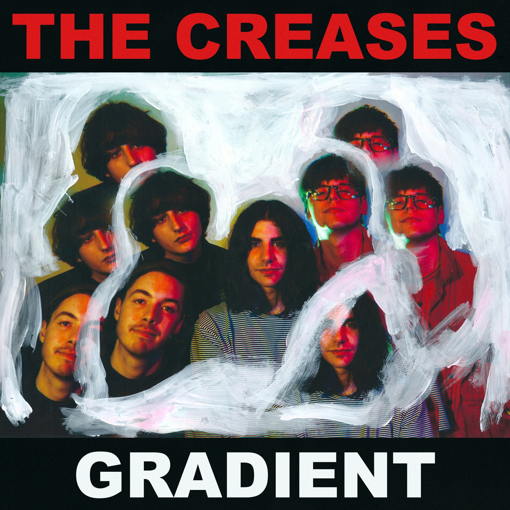

|  |
The Creases Gradient - EP Liberation Music 25 July 2014 |
After teasing us a couple of months ago with the single Static Lines, The Creases have now released their debut EP ‘Gradient’, an especially noisy and boisterous affair. Evoking similar sentiments as the lead single, Gradient journeys through events with such imagery that’ll make you wonder if they’re your own, again emphasising the band’s affinity for sprinkling both playful and serious undertones throughout their songs. Not only that, they’ve again proven the knack for writing hooks that swim around your head effortlessly, bringing such storytelling together. Opening with squealing guitars, a pulsing bass line and an almost hypnotic beat, How Long ’Til I Know sounds effortless in its delivery, with the point further realised when the vocals are introduced. The serene delivery adds an air of nonchalance that swirls around the overdriven guitars, revealing an incredible cohesiveness with the band’s songwriting. The song is also a great showcase of their flair for writing hooks - the lead guitar sounds equal parts urgent and inviting, resulting in one of the many ear worms present throughout the EP. Similarly, their sense of melody is superbly demonstrated in Fall Guy, the least frantic track on the EP. From the get go, the song sounds like it belongs in the midst of a wedding playlist - a feeling reinforced by the crooning vocals and their picturesque reflection about two lovers (slow dance anyone?). And far from a backing track, the rest of the band pushes this particular envelope further, as the instrumentation exudes an undeniable groove that drives the imagery further - bouncing drums, jangly guitars and delicate bass lines, and even the oohs and ahs in the chorus all lending themselves to the cause. The rest of ‘Gradient’ is no different - each track is a standout on its own, all emphasising what’s great about this band. As a debut offering, this EP sees The Creases find their own sound and embody it completely, as this handful of songs are strewn with captivating melodies that will have you lying awake at night. Originally written for City And Sound. |